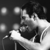
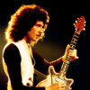
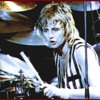
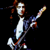

После смерти вокалиста Queen Фредди Меркьюри группа практически прекратила студийную деятельность: в 1997 году группа уже как трио записала новый сингл «No-One but You (Only the Good Die Young)», после чего Джон Дикон ушёл из музыкального бизнеса. В 2004 году Брайан Мэй и Роджер Тейлор возродили группу, запустив коллаборационный проект «Queen+», исполняя с приглашёнными вокалистами как проверенные хиты, так и новый материал. Первым фронтменом группы в рамках этого проекта стал блюзовый певец Пол Роджерс, с которым был записан новый студийный альбом The Cosmos Rocks, получивший смешанные отзывы фанатов и критиков. С 2011 года состав выступает с Адамом Ламбертом под названием «Queen + Adam Lambert». Студийных записей с ним на момент 2019 года не проводилось, но группа не исключает такую возможность.
Ещё про Queen

Фредди Меркьюри (вокал)

Брайан Мэй (гитара)

Роджер тейлор (ударные)

Джон Диккон (гитара)